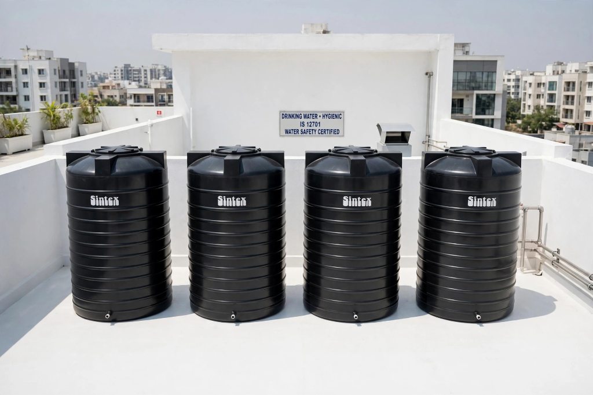

Why Rooftop Black Sintex Tanks Turn into High-Heat Microbial Incubators
Black polyethylene tanks absorb immense solar radiation during sunny months. As internal water temperatures surge past 42°C, your rooftop tank stops being a passive container and transforms into an incubator for thermophilic bacteria and toxic algal strains.

Four certified black Sintex polyethylene water tanks installed on a residential terrace, exposed to intense ambient ultraviolet and solar radiation that accelerates water temperature.
Executive Lab Summary & Key Takeaways
- Solar Greenhouse Effect: Black carbon-pigmented polymer absorbs infrared heat, elevating water temperature 8°C to 14°C above ambient air.
- Optimal Incubation Zone: Temperatures between 35°C and 45°C trigger exponential multiplication of Legionella and Pseudomonas colonies.
- Polymer Outgassing: Uncleaned overheated tanks break down stagnant organic sludge into foul anaerobic hydrogen sulfide gas.
- Preventive Protocol: Regular quarterly sediment extraction combined with food-grade sanitizing mist prevents thermal biofilm adherence.
Thermal Dynamics and Bacterial Kinetics in Rooftop Polymer Storage
Rooftop water storage tanks are exposed to continuous solar ultraviolet and infrared irradiation throughout daylight hours. Polyethylene resin compounded with carbon black is designed to resist UV embrittlement, but this dark pigmentation turns the reservoir into a thermal sponge.
In hot seasons, standing water inside the upper half of the tank regularly reaches 44°C. At this temperature, dissolved oxygen levels plunge dramatically, creating a micro-aerobic stratified layer where anaerobic bacteria thrive at triple their standard reproductive rates.
Homeowners who shower or brush their teeth in the evening are directly inhaling warm, aerosolized water droplets laden with thermophilic bacteria. Mechanized high-pressure descaling completely strips the organic nutrient film that these bacteria feed upon.
"When ambient temperature is 32°C, a black rooftop tank floor can easily register 45°C. At that threshold, bacterial doubling times drop from hours to under 22 minutes."
Water Temperature vs. Microbial Colony Growth in Rooftop Sintex Tanks
Tested using digital photometers, atomic absorption spectroscopy, and NABL certified culture plate cultivation.
| Internal Tank Temp | Bacterial Doubling Time | Predominant Microbial Flora | Health Risk Rating |
|---|---|---|---|
| 20°C - 25°C (Cool Morning) | 120 Minutes | Background Soil Microbes | Low Risk |
| 26°C - 34°C (Midday Normal) | 45 Minutes | Coliforms, Pseudomonas | Moderate Risk |
| 35°C - 44°C (Peak Afternoon Heat) | 18 Minutes | Legionella pneumophila, Biofilm Strains | Severe Health Hazard |
| Post 7-Stage UV Clean | Inactivated (>99.99%) | Sterile / Non-viable Pathogens | Medical Grade Safe |
Marcus Vance, M.Sc.
Principal Sanitation Engineer • Infrastructure Water Systems. Conducts clinical microbiology investigations, municipal water pipeline testing, and mechanical sanitation audits across residential complexes and institutional healthcare facilities.
Schedule Your 7-Stage Deep Clean Today
Eliminate dangerous tank silt and biofilms before they reach your taps. Includes free certified laboratory water purity testing and post-clean photo audit.